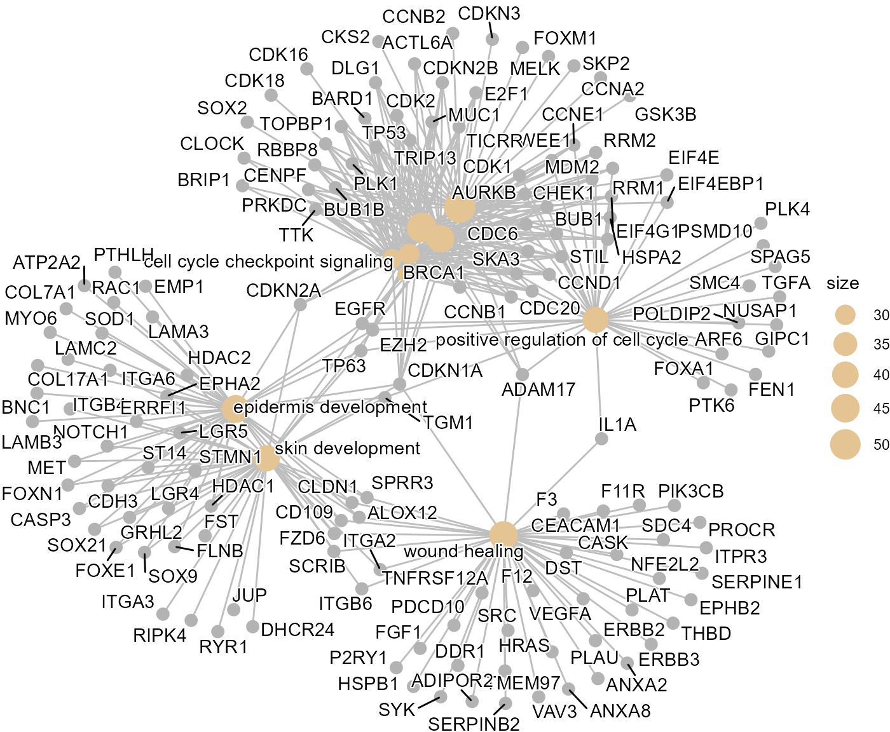
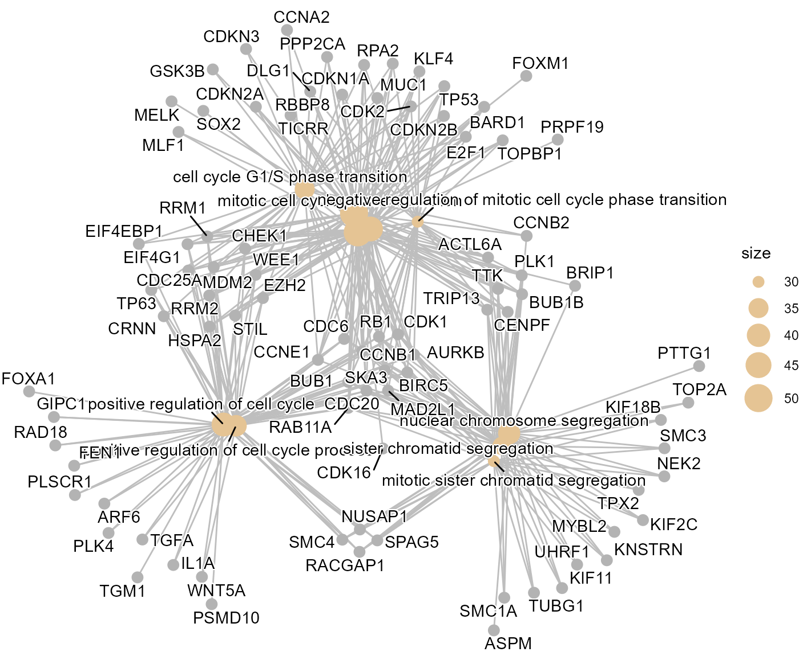

Cervical cancer
Cervical.RmdCervical cancer
This vignette demonstrates the SpatialCopyInference workflow using a human cervical cancer dataset as an example.
First, packages necessary for this vignette are loaded.
Data import
This workflow uses a Xenium human cervical cancer dataset from 10x Genomics: FFPE Human Cervical Cancer with 5K Human Pan Tissue and Pathways Panel plus 100 Custom Genes.
Users wishing to reproduce this analysis should first download the Xenium output files from:
https://www.10xgenomics.com/datasets/xenium-prime-ffpe-human-cervical-cancer
# Path to Xenium output directory
data_dir <- "path/to/Xenium_outputs/outs"
# Import Xenium data
xenium.obj <- import_xenium(data_dir, annotation_file = NULL)
# Dataset dimensions
dim(xenium.obj)
#> [1] 5101 840387Quality control
Cell quality is assessed using the distributions of detected genes
(nFeature_Xenium) and transcript counts
(nCount_Xenium).
Low quality cells are removed using filter_cells().
# Dataset dimensions before filtering
dim(xenium.obj)
#> [1] 5101 840387
# Filter low quality cells
xenium.obj <- filter_cells(xenium.obj)
# Dataset dimensions after filtering
dim(xenium.obj)
#> [1] 5101 827407Gene filtering
Lowly expressed genes are filtered using filter_genes()
prior to downstream analyses.
# Number of genes before filtering
nrow(xenium.obj)
#> [1] 5101
# Filter lowly expressed genes
xenium.obj <- filter_genes(xenium.obj,
min_cells = 50,
min_counts = 50)
# Number of genes after filtering
nrow(xenium.obj)
#> [1] 5092
# Display removed genes
head(xenium.obj@misc$removed_genes, 20)
#> [1] "CYP2A6" "EIF1AY"
#> [3] "F2" "HPV18-E6"
#> [5] "Human-CTNNB1-S33C-ALT:G" "Human-PTEN-G129E-WT:A"
#> [7] "SRY" "TBL1Y"
#> [9] "USP9Y"Normalisation
Normalisation is performed using normalise_data(), which
applies Seurat::NormalizeData() with the “LogNormalize”
method and converts the resulting values to log2 scale.
# Perform normalisation
xenium.obj <- normalise_data(xenium.obj)
# Example log2-normalised expression values for selected genes
xenium.obj@assays$Xenium$data[c("CCNE1", "MKI67", "TP53"), 1:5]
#> 3 x 5 sparse Matrix of class "dgCMatrix"
#> aaaabpen-1 aaaadiho-1 aaaaeehl-1 aaaafafo-1 aaaafnpm-1
#> CCNE1 . . . . .
#> MKI67 . . . . .
#> TP53 . . . . .Chromosome arm means
Chromosome arm means for each cell are computed using
compute_arm_means().
# Compute arm means
arm_means_matrix <- compute_arm_means(xenium.obj,
min_genes_per_arm = 5)
# Show values for a subset chromosome arms and cells
arm_means_matrix[1:5, 1:5]
#> aaaabpen-1 aaaadiho-1 aaaaeehl-1 aaaafafo-1 aaaafnpm-1
#> chr1_p 0.1819307 0.03071461 0.07520027 0.24600527 0.08505906
#> chr1_q 0.1467645 0.03163311 0.14522803 0.14483110 0.07392037
#> chr2_p 0.2186163 0.00000000 0.06777308 0.11694798 0.28746810
#> chr2_q 0.1452433 0.07591946 0.06970946 0.24334379 0.21169236
#> chr3_p 0.1405700 0.05993642 0.05503378 0.08754281 0.04668655Log ratio profiles
Here, chromosome arm log ratios are computed using the global mean of
all cells with compute_arm_ratios().
# Compute chromosome arm ratios using global mean as reference
arm_ratios <- compute_arm_ratios(arm_means_matrix, xenium.obj)
# Show ratios for a subset chromosome arms and cells
arm_ratios[1:5, 1:5]
#> aaaabpen-1 aaaadiho-1 aaaaeehl-1 aaaafafo-1 aaaafnpm-1
#> chr1_p 0.08377623 -0.06743988 -0.02295422 0.147850782 -0.01309543
#> chr1_q 0.05727103 -0.05786031 0.05573461 0.055337676 -0.01557305
#> chr2_p 0.11794928 -0.10066706 -0.03289397 0.016280928 0.18680105
#> chr2_q 0.05088676 -0.01843710 -0.02464710 0.148987231 0.11733580
#> chr3_p 0.06174567 -0.01888795 -0.02379059 0.008718443 -0.03213782Spatial clustering
Here, BANKSY is applied to chromosome arm log ratio profiles
generated by compute_arm_ratios() using
compute_spatial_clusters().
# BANKSY clustering using lambda = 0.8
BANKSY.obj <- compute_spatial_clusters(
arm_ratios = arm_ratios,
xenium.obj = xenium.obj,
lambda = 0.8,
resolution = c(0.05)
)Cluster visualisation
The resulting clusters are visualised using
plot_cluster_heatmaps(). In this cervical cancer dataset,
three distinct SCNA populations were identified. Clusters 2 and 3 showed
pronounced chromosome arm-level SCNAs, including 3q, 8q and 20q gains,
which are among the most frequently amplified chromosome arms in
cervical cancer. Cluster 1 remained largely copy number neutral.
# Plot cluster heatmap for lambda = 0.8 and resolution = 0.05
plot_cluster_heatmaps(
BANKSY.obj,
resolutions = c(0.05)
)
#> $res_0.05 Cluster assignments are transferred back to the Xenium object using
Cluster assignments are transferred back to the Xenium object using
add_banksy_clusters().
# Add arm clusters of desired lambda and resolution back to main Xenium object
xenium.obj <- add_banksy_clusters(xenium.obj,
BANKSY.obj,
resolution = 0.05)Spatial cluster assignments are visualised using
plot_spatial_clusters(). The inferred SCNA clusters were
consistent with the pathologist annotations, with Cluster 3
corresponding predominantly to in situ disease and Cluster 2 mapping
primarily to invasive squamous cell carcinoma.
# Custom colour pallete
col_pal_BANKSY <- c("#8CD17D","#F28E2B","#4E79A7")
# Plot spatial clusters
plots <- plot_spatial_clusters(
xenium.obj,
cluster_palette = col_pal_BANKSY
)
# Plot one image with all spatial clusters
plots$spatial_clusters_plot
# Plot each spatial cluster separately
plots$spatial_clusters_plot_facets
Cluster comparison
To characterise the biological differences between SCNA-defined populations, differential expression and Gene Ontology enrichment analyses were performed.
Cluster 2 (tumour-associated) and Cluster 1 (non-malignant) are compared.
# Compare Cluster 2 vs 1
cluster2v1 <- compare_spatial_clusters(
xenium.obj,
ident_1 = "2",
ident_2 = "1")
# Differentially expressed genes
head(cluster2v1$de)
#> p_val avg_log2FC pct.1 pct.2 p_val_adj
#> DSC3 0 4.272493 0.798 0.039 0
#> HSPB1 0 2.958077 0.826 0.119 0
#> LDHA 0 1.572394 0.616 0.112 0
#> NDRG1 0 3.065498 0.532 0.045 0
#> ANXA2 0 1.345209 0.585 0.110 0
#> DSG3 0 3.896746 0.491 0.020 0
# GO enrichment dot plotbut
cluster2v1$go_dotplot
# GO enrichment cnet plot
cluster2v1$go_cnetplot
Cluster 3 (tumour-associated) and Cluster 1 (non-malignant) are also compared.
# Compare Cluster 3 vs 1
cluster3v1 <- compare_spatial_clusters(
xenium.obj,
ident_1 = "3",
ident_2 = "1")
# Differentially expressed genes
head(cluster3v1$de)
#> p_val avg_log2FC pct.1 pct.2 p_val_adj
#> DSC3 0 3.3013079 0.743 0.039 0
#> HSPB1 0 1.9785270 0.808 0.119 0
#> H3F3B 0 0.5131962 0.767 0.206 0
#> TRIM29 0 3.0102244 0.558 0.025 0
#> RAC1 0 0.8367997 0.657 0.134 0
#> SPRR3 0 3.1244454 0.541 0.047 0
# GO enrichment dot plot
cluster3v1$go_dotplot
# GO enrichment cnet plot
cluster3v1$go_cnetplot
Summary
This vignette demonstrated the SpatialCopyInference workflow using a Xenium cervical cancer dataset. Three SCNA-defined populations were identified, including clusters associated with in situ and invasive squamous cell carcinoma. The inferred SCNA clusters were consistent with independent pathologist annotations, illustrating how SpatialCopyInference can identify biologically meaningful spatial SCNA populations associated with distinct pathological states.